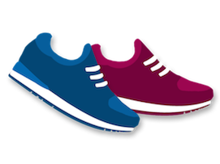
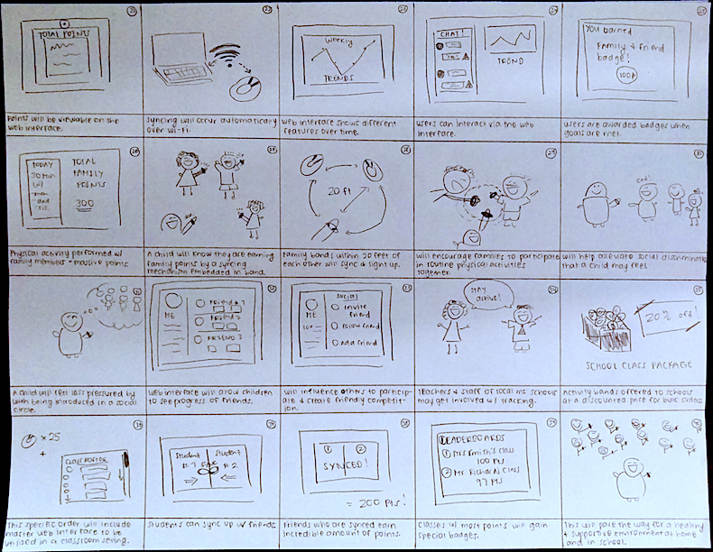
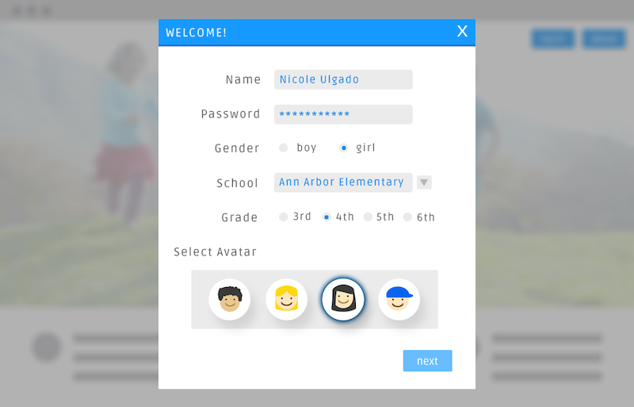
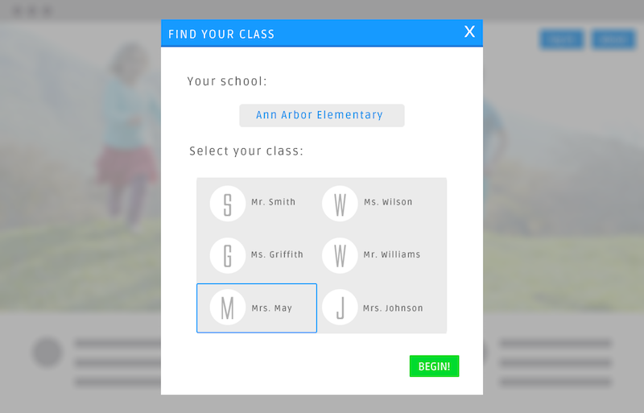
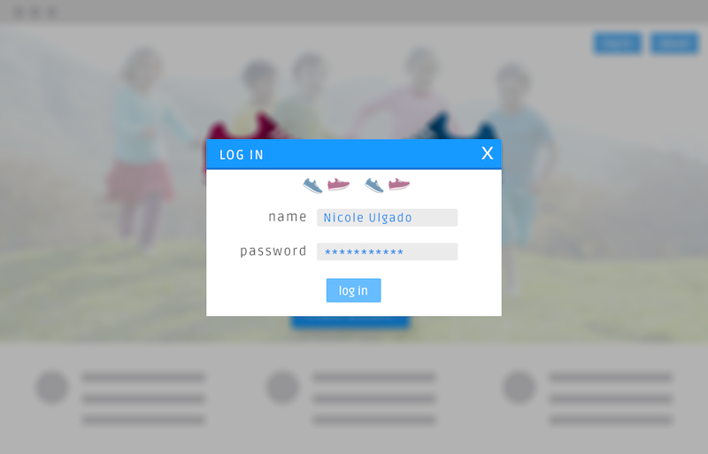
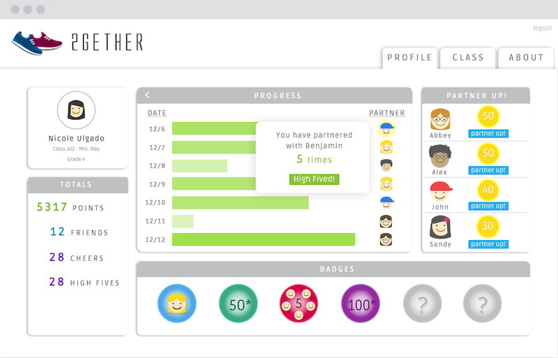
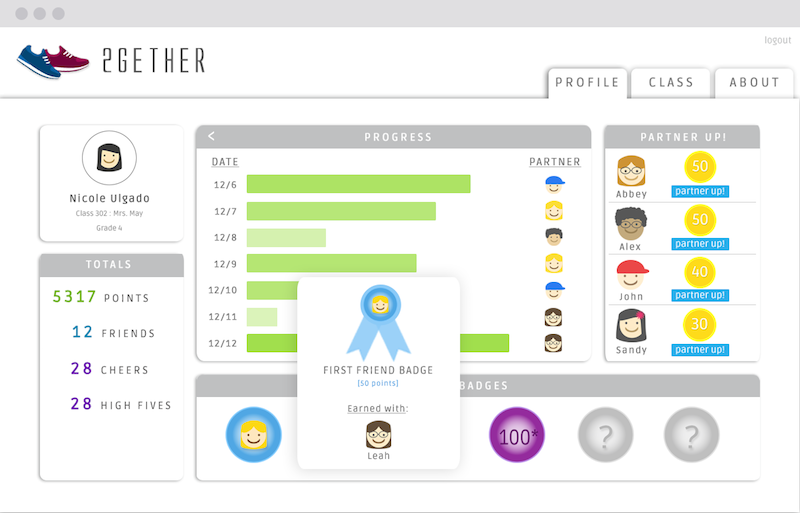
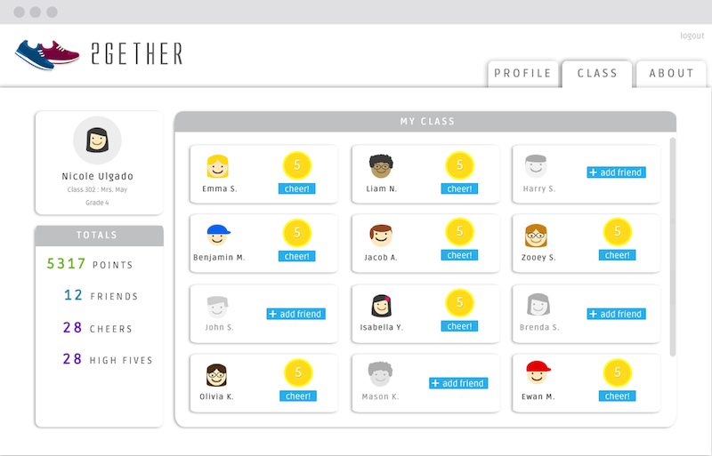
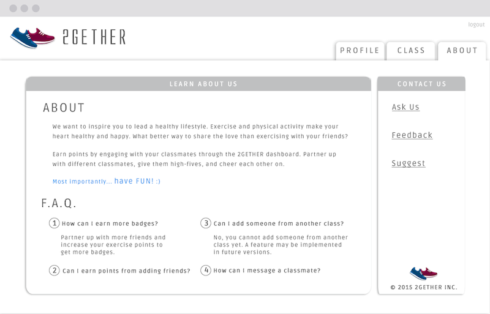

About
I designed 2GETHER, a web application designed for school children with the aim of increasing physical activity by tackling social barriers in classroom settings.
Background
My Role: User Researcher, UI Designer
Date: Sept 2015 - Dec 2015
UM Course: Interaction Design
Tools: Photoshop CS6, Marvel
Childhood Obesity Statistics
The childhood obesity epidemic has more than doubled in children and quadrupled in the past 30 years. According to the Center for Disease Control and Prevention, more than one-third of children and adolescents were overweight or obese and rates continue to be on the rise. In Detroit, MI, the statistics are not much different. Children in the Detroit area in the early childhood (3-8 years old) to later childhood (9-11 years old) stages have an obesity rate of 13.2%, according to state reports.
Project Aims
This web application aims to decrease childhood obesity rates in the area by tacking social barriers in classroom settings. According to the National Association for the Education of Young Children, utilizing technology and interactive media as tools for early childhood programs has been successful and has the potential to lessen not only the social barriers they face, but the lack of motivation and energy to exericise as well.
Discovery of the Problem
Background Research: I conducted extensive background research to gain insight into early childhood
behavior in and out of school settings and about the Detroit area.
Storyboards: Creating a 40-sketch storyboard and narrowing down those 40 sketches to an 8-sketch storyboard
helped understand ways to approach the design problem. Drawing out these solutions helped visualize how the solution
would look in front of different stakeholders, the different components that needed to be incorporated into the
application, and how a number of solutions could be combined into one. These sketches were useful in exploring
and communicating ideas to my peers and potential users. Gaining feedback and critiques about these different
designs all at once was also really useful in keeping my creativity from being mindfully constrained.

Ideating
Brainstorming: During brainstorming sessions with my peers, significant feedback was provided all throughout
and helped narrow down the scope of the design solution. First, a process that was under much debate and critique
was how individual students would be set up as partners to perform physical activity. Different approaches that came
up during these sessions were tapping physical activity trackers/wristbands, syncing physical activity
trackers/wristbands while utilizing the web application, being randomly assigned by an algorithm, or partner
selection chosen by a facilitator (such as the teacher of a class). It was decided that an algorithm would determine
students that the user typically does not pair up with to ensure that all students are involved with the purpose of
reducing social barriers and stigma. Second, through discussion of personas and designing for a diverse audience,
questions raised regarding legal issues associated with gathering data about minors. This influenced and narrowed
down the design decision to keep the web application in a school-protected setting where parents of these minors
would need to provide their consent. Third, the user base is within the early childhood to early adolescent stages,
and so there was brainstorming regarding gamification. It was determined that a point system and a consistent daily
way to earn these points should be put into place. A subcategory of gamification that was under brainstorming sessions
was the competitive aspect that could arise. This influenced the design decision to keep other user’s points and totals
from being visible to other users.
Building
Low Fidelity Wireframes: Through low-fidelity prototypes, feedback was given on the intuition behind
interactions, the placement of specific tiles on the “Profile” and “Class” page, and the primary audience. Simple interactions
such as clicking on the company’s logo was not intuitive to users as I had expected, and so the creation of an “About”
page was underway. The placement of specific tiles was under some discussion as the importance of a user’s progress,
partnering up with another user, and the point totals were questioned. It was decided that the user’s progress with their
partners and the main call to action to partner up were the most important and therefore placed at the top of the page.
High-fidelity Prototype: Through the testing of the high-fidelity prototype, I was given feedback regarding color
schemes, information architecture, and icon designs. Because of the young user base, it was decided to utilize a very bright
color scheme. However, incorporating too much color on one page made it difficult to determine the main call to action on the
“Class” tab. The ordering of information and icon designs on the “Class” tab was also under discussion and the classmate tile layouts
were also changed to emphasize the “cheer” and “add friend” buttons.






